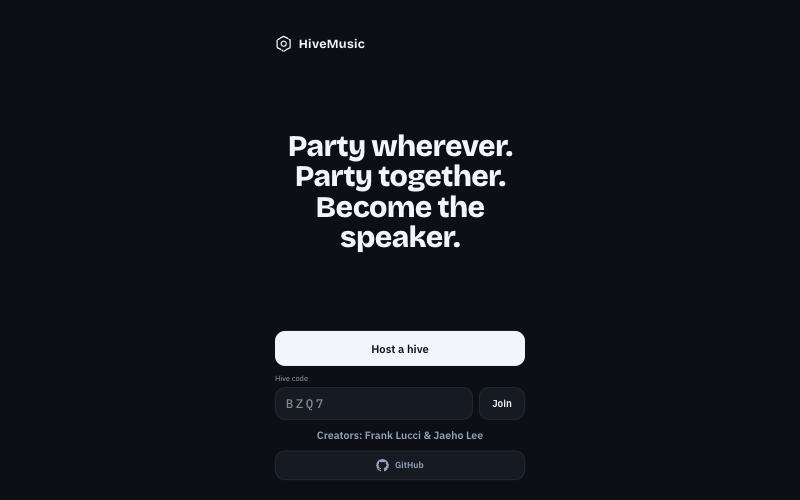

HiveMusic
A room of phones that plays as one speaker.
Frank Lucci and I started HiveMusic at HackMIT 2026, and it's now live. A host taps "Host a hive", friends scan a QR code and join in their browser without installing anything, and every phone in the room plays the same song in sync.
One phone is quiet. Phones that play within about 10 milliseconds of each other add up: ten of them are about 10 decibels louder than one, and they sound like a single source instead of a smear of echoes.

Keeping phones in sync
The goal is 10 milliseconds or less between any two phones. Each phone keeps asking the server what time it is and corrects for how long the answer took to arrive, which is how computers sync their clocks over the internet. It loads the song ahead of time and schedules playback against that shared clock.
Phones also differ in how long it takes from starting a sound to hearing it from the speaker. So when the host presses Start, the hive runs a short tuning step: every phone plays a click, and the host's phone listens and measures how late each one is. After that, each phone keeps correcting for drift while the music plays.
What a room of phones can do
Every phone holds the whole song, split into parts (drums, bass, vocals and the rest) when the song has them. Switching modes changes what each phone plays, at an agreed moment on the shared clock:
- In unison mode, every phone plays the whole song.
- In orchestra mode, each phone plays one part, so walking across the room walks through the band.
- In stereo mode, the two halves of the room play left and right.
- In wave mode, the sound sweeps across the room.
- In strobe mode, groups of phones trade off on the beat.
- In choir mode, each phone is pitch-shifted to a harmony of the song.
Hosts upload their own songs, which play as a playlist. The server analyzes each one for tempo, beats and drops.